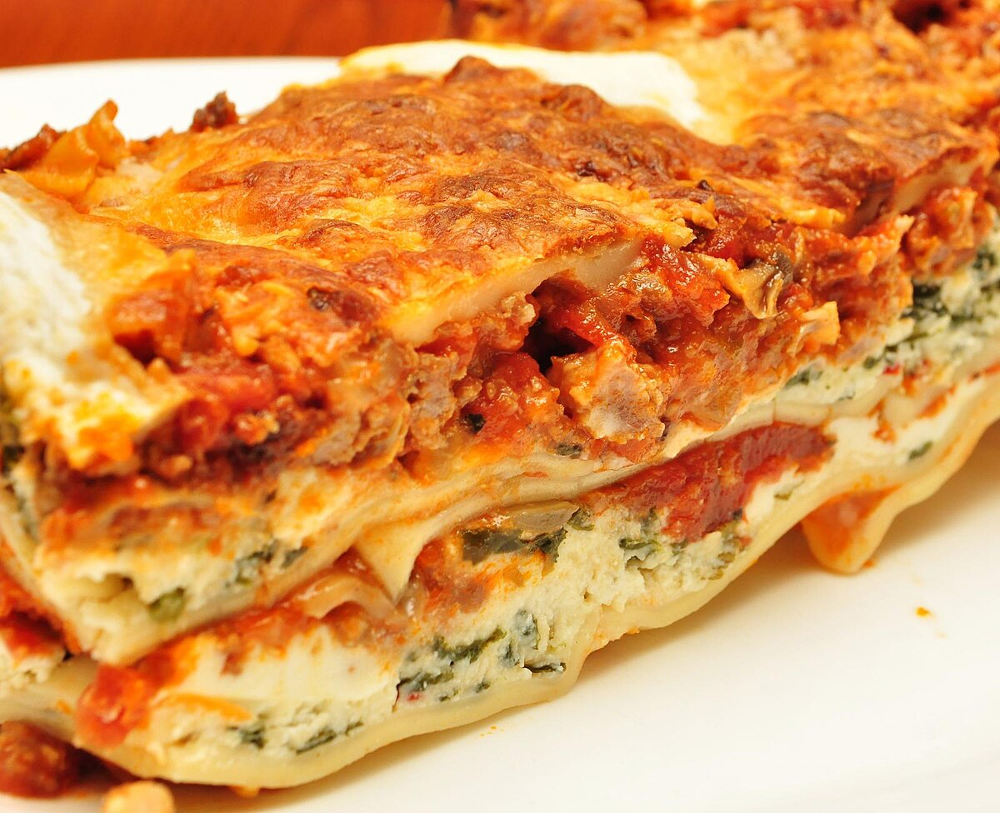

Lasagne

Lasagne
Description
Here is a staple recipe for when you have time to cook
It takes around 1h 30m to make this deliscious dish
Ingredients
- 9 Lasagneplater
- 3dl revet ost
- 150g Bacon
- 2ss Olje
- 400g Kjottdeig
- 1stk finhakket lok
- 1stk finhakket gulrot
- 1stk finhakket selleri
- 2ss tomatpure
- 2 bokser hermetiske tomater
- 2dl kjottkraft
- 2ts torket oregano
- 3ss smor
- 3ss hvetemel
- 6dl melk
- 5ss revet parmesan
- 1ts salt
- 0,5ts pepper
- 0,5ts revet muskattnott
Steps
- Skjer bacon i sma biter. Ha olje i en varm panne og stek til baconet til det er gyllent. Ha i litt mer olje og brun kjottdeig i olje pa sterk varme i to omganger.
- Senk varmen litt og ha i lok, gulrot og stilkselleri og la det steke til gronnsakene er blitt myke og blanke. Ha baconet og kjottdeigen tilbake i stekepanna og bland alt sammen.
- Lag en grop i midten av stekepannen. Ha i litt mer olje og fres tomat pureen i noen minutter. Ha i hermetisk tomat, kraft og krydder. La kjottsausen smakoke i minst 10 minutter, til den begynner a tykne. Har du litt god tid? La gjerne sausen smakoke under lokk i ca. 1,5 time, for a utvikle ekstra god smak. Husk a ror litt i kjelen underveis, slik at det ikke fester seg pa bunnen av gryta. Smak til med salt og pepper.
- Smelt smor i en kjele og ror inn mel. Spe med melk under omroring og la sausen koke i ca. 10 minutter. Den skal vere forholdsvis tykk. Ha i parmesan og la osten smelte. Smak til ostesausen med krydder.
- Legg kjottsaus, pastaplater og ostesaus lagvis i en ildfast form. Avslutt med pastaplater og ostesaus. Dryss over revet ost til slutt.
- Sett formen i stekeovn pa 200 C og stek i 30-40 minutter. Kjenn etter med en pinne eller spiss kniv om pastaen er mor. La lasagnen hvile noen minutter for servering.